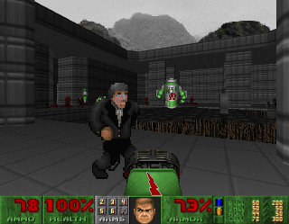
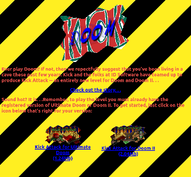
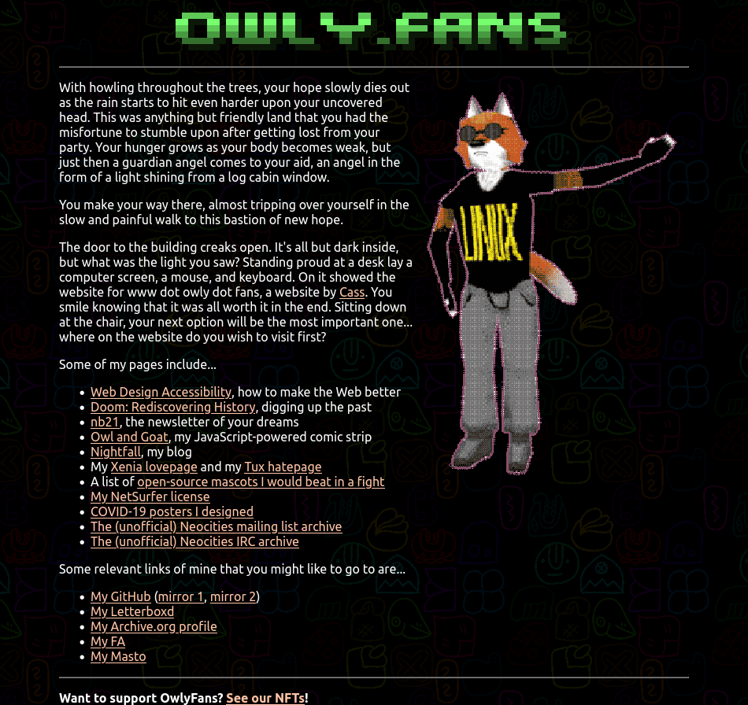

<!DOCTYPE html>
<html>
<title>Kick Attack! | Doom: Rediscovering History</title>
	<meta charset="utf-8">
	<meta content="OWLY.FANS" property="og:title" />
	<meta content="Because Sometimes Doom is just bad" property="og:description" />
	<meta property="og:image" content="https://owly.fans/floppy.png">
	<meta content="#9B4F96" data-react-helmet="true" name="theme-color" />
    <meta name="keywords" content="owly, cass python, neocities, neozones, brit, uk, archive, site ran by a stud, england, wales">
	<link rel="shortcut icon" type="image/x-icon" href="../../../favicon.ico">
    <link rel="stylesheet" href="../../style.css">
    </html>
	    <body><p><a href="../">Back to index</a></p>
		<h1>Kick Attack!</h1>
			<hr>
			<p></p>
			<em>Cass &#xAB;Owly&#xBB; Python, 2024-01-31. Published 2024-02-10.</em>
			
	<p><figure>
        <center></center>
					<figcaption><p>The last room of the game where you face against a giant Alpine Spew can, an obvious parody of <em>Mountain Dew</em>.</p>
		</figcaption>
		</figure></p>
<p>When it comes to adverts, using video games to get a product's name out there is really nothing new, even by 1996 standards. There are so many games like 2019's <a href="https://en.wikipedia.org/wiki/I_Love_You%2C_Colonel_Sanders!"><em>I Love You, Colonel Sanders!</em></a>, <a href="https://en.wikipedia.org/wiki/M.C._Kids?useskin=monobook">M.C. Kids</a>, <a href="https://en.wikipedia.org/wiki/Yo!_Noid">Yo! Noid</a>, and the classic, <a href="https://doomwiki.org/wiki/Chex_Quest">Chex Quest</a> that were all made to gain awareness for that company (even if the majority of products are USA-exclusive), of course, there's nothing inherently wrong with a company trying to reach a wider market, and making a video game (especially one that they ideally want to go viral, i.e. the pre-mentioned Colonel Sanders/KFC game) is a fun way of doing so, even if I personally hate the idea all together, but hey, that's just the opinion of a bitter adult <span aria-hidden="true"><tt>¯\_ (ツ)_/¯</tt></span></p>

<p>Man, these multi-million dollar companies are so cool!</p>

<p>Thinking about it, the only two mods for Doom that were made with the sole intention of being adverts, that I can think of, would be today's WAD, <a href="https://doomwiki.org/wiki/Kick_Attack!">Kick Attack!</a>, and the aforementioned Chex Quest. I really do not think I need to talk about the cult-like status that Chex has made over the years, but for the uninitiated, it's another Doom WAD that's made up of five levels, allowing you to play as Chex Warrior, the hero of the story who needs to rescue his fellow Chex people from slime-like creatures called the Flemoids in this non-violent adventure. Oh, also buy our cereal.</p>

<p>I don't want to talk about Chex all that much here, but it's a fun <a href="https://doomwiki.org/wiki/Total_conversion">total conversion</a>, with new textures, sounds, music, and story. Now, let's go into reverse gear here and talk about the kind of oddity that is... Kick Attack! Oh yeah!</p>
			
	<p><figure>
        <center></center>
					<figcaption><p>Screenshot for <a href="https://web.archive.org/web/19970131181034/http://kicksoda.com/doom/doom.html">the now-defunct website</a> for the Kick Attack! soda. Amazally ugly.</p>
		</figcaption>
		</figure></p>

<p>As used as a way to flog their soft drink, <a href="https://en.wikipedia.org/wiki/RC_Cola">RC Cola</a>, <em>who I am uncertain if they are even around in my native UK</em>, hired now former co-owner of id Software, Tim Willits, to make this promotional WAD for <a href="https://en.wikipedia.org/wiki/Kick_(soft_drink)">Kick soda</a>, a drink that was certainly not new when this game was made, first becoming available in 1965 and then becoming unavailable in 2002 when <a href="https://en.wikipedia.org/wiki/Cadbury">Cadbury</a> (of all companies) brought up RC. All this means that this WAD, is for all intents and purposes, now a relic, an ad for a defunct drink by a company that was bought out, so <em>womp womp</em>.</p>

<p>The plot for this level, which took me just under ten minutes to complete, has you play as «a veteran Quality Control Manager at a Kick bottling plant. Your world is one of suits and ties, tests and reports, but above all making sure that every bottle of Kick that hits the streets is a brain-mashing brew of nitro-driven fizz» (oh, shut up, buzz words) when you basically find that Alpine Spew (Get it? Like Mountain Dew, ha) have been stealing the «kick» out of the soft drink, so now it's your mission to stop them «armed only with the pistol from your desk» (why do yo have a gun in your desk???).</p>

			
	<p><figure>
        <center><a href="owlyfans.png"></a></center>
					<figcaption><p>An example of another ugly website... wait, how did that get here??</p>
		</figcaption>
		</figure></p>
<p>Personally, this is why I would suggest being apart of a union so this would not happen.</p>
			
<p>With all of that boring pre-context out of the way, for something made to sell me a cool and refreshing soft drink that I'd enjoy with my pals on a hot summer day or even on a date with my beautiful partner, this WAD ain't half bad. While not the most <em>amazing</em> thing to come out of 1996, this is still a fun time. The mod, which is a single level (although also two versions exist, one for Doom and one for Doom II (both the same)), shows me competent and an understanding of map making that other people might not have had at the time and the level, I feel like, could be a challenge at times for noobie players thanks to the common use of <a href="https://doomwiki.org/wiki/Shotgun_guy">shotgunners</a> and an end fight with a giant Alpine Spew monster (should probably talk about Alpine Spew before here) (AKA <a href="https://doomwiki.org/wiki/Spiderdemon">spider mastermind</a> reskin) at the end.</p>

<p>Saying that, a wise player would be able to stock up on their <a href="https://doomwiki.org/wiki/Plasma_gun">plasma ammo</a> throughout the map, as well as being able to find the not-so-hidden secret during playthrough that rewards you with a very nice rocket launcher to splatter the enemies with. Yippee.</p>

<p>This is certainly not the next best thing since sliced bread, but has its highlights, such as the pinkie replacement that's now a gray-haired, tuxedo-wearing, microphone-holding lounge singer of all things that has its normal pinkie growls replaced with humorous lines like «Alight, baby!» and «Take it, baby!». Very strange inclusion, but one that ultimately makes Kick Attack! what it is, much like how the inclusion of the lost souls, who are now, quite admittedly, freaky floating Alpine Spew cans with horrible teeth and a long tongue makes this a strange time capsule.</p>
	
			<p>Downloads</p>
	<ul>
	<li><a href="https://www.doomworld.com/idgames/levels/doom/j-l/kickdm">/idgames archive (Doom)</a></li>
	<li><a href="https://www.doomworld.com/idgames/levels/doom2/j-l/kickdm2">/idgames archive (Doom II)</a></li>
</ul>  

			<p>See also</p>
				<ul>
	<li><a href="https://onemandoom.blogspot.com/2011/11/kick-attack-kickdmwad-and-kickdm2wad.html"><yell>OneManDoom</yell>'s review of Kick Attack!</a></li>
	<li><a href="https://web.archive.org/web/19970131181034/http://kicksoda.com/doom/doom.html">The original website for the WAD</a></li>
	<li><a href="https://www.youtube.com/watch?v=W9GyaTCvsCw">Kick Attack! - The Forgotten Doom Sponsorship</a> (where I first found about the WAD)</li>
</ul> 
				
<p></p>
	<hr>	
<p><strong>Want to support OwlyFans? <a href="/nft/">See our NFTs</a>!</strong>
</p>

	
	<p>Copyright 2024 - <script type="text/javascript">
var today = new Date()
var year = today.getFullYear()
document.write(year)
</script> by Cass &#xAB;Owly&#xBB; Python, licensed under the <a href="../../../license/fopl-mdp-v2" title="The Freedom Owl Public License: Modifications, Distributions, and Private Use Version 2" alt="The Freedom Owl Public License: Modifications, Distributions, and Private Use Version 2">FOPL-MDP V.2</a>. Please see <a href="../../../humans.html">humans.html</a> for full credit and thanks. Peace and love.</p>
<p><font color="black"><center>&#x2605;</center></font></p>
<p>
<div style="text-align:right">
<a href="http://bytemoth.nfshost.com/cd5k-net/tau">&tau;</a>
</p>
</div>
<p></p>
	<script src="../../../ruffle/ruffle.js"></script>
<script src="../../../script.js"></script>
    </body>
</html>